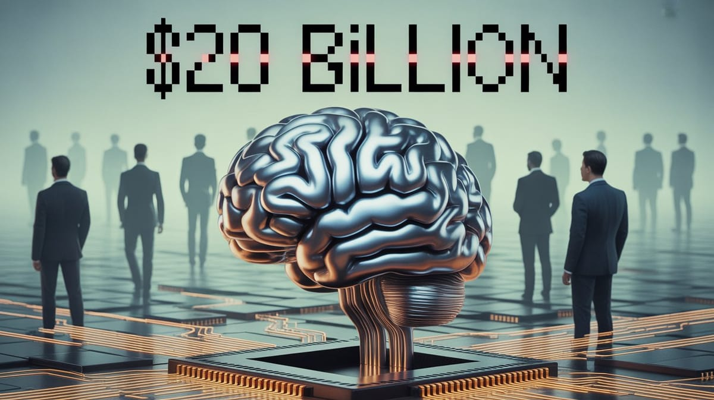

The Token Wisdom Rollup ✨ 2025
One essay every week. 52 weeks. So many opinions 🧐


:: Now begins a story...
May I present to you, a finely curated section of a fine collection of the wonderful web we weave with a weekly roundup of bits and pieces from the far corners of the super information highway that I like to call — Token Wisdom ✨


"The real question is not whether machines can think, but whether [people] do."
— According to B.F. Skinner, American psychologist and behaviorist, whose theories on operant conditioning inadvertently laid the groundwork for modern AI reinforcement learning algorithms, leading to machines that can now modify human behavior more effectively than he ever imagined possible.

Editor's Notes 📆
Week 53 of 52 // December 28th 🧿 January 3rd, 2026
Welcome to the 141st edition! As we step into the new year, we find ourselves at the intersection of groundbreaking scientific discoveries and pressing environmental concerns. From the microscopic world of 'mini-brains' to the global crisis facing honeybees, this week's collection highlights the complex challenges and opportunities shaping our future.
The convergence of neuroscience, artificial intelligence, and environmental studies underscores the need for a holistic approach to innovation—one that balances technological progress with ecological preservation and ethical considerations.

🔮 Pearls of Wisdom, The Latest Edition...
Get smart, fast. If you're pressed for time and want to keep up to date!
Enjoy The Newest Latest, A Closer Look & Time Well Spent!

🎉 Newest / Latest
100% Authentic Humanly Chosen

Brains, Bees, and Beyond: The Frontiers of Science and Technology
This week's collection explores the cutting edge of scientific research and technological innovation, revealing both the promise and perils of our rapidly advancing world.
- 'Mini-Brains' Unlock Mysteries of Mental Disorders
Scientists use lab-grown brain models to identify neural signatures associated with schizophrenia and bipolar disorder, opening new avenues for understanding and potentially treating these complex conditions. Read more at ScienceAlert - Honeybee Crisis Reaches New Heights
A record-breaking collapse of U.S. honeybee colonies has stunned scientists and farmers, revealing a hidden threat that's rapidly outpacing current defense mechanisms. This crisis poses significant risks to agriculture and ecosystem balance. Read more at Indian Defence Review - National Science Foundation Undergoes Major Reorganization
The NSF's restructuring eliminates divisions and rotators, emphasizing career staff in supervisory roles. This shift could significantly impact how scientific research is funded and managed in the United States. Read more at Science.org - China Leads in Space-Based AI Supercomputing
China's efforts to build a powerful AI data center above Earth put it ahead in the space race against the U.S., potentially revolutionizing data processing and global connectivity. Read more at Popular Mechanics - The Mathematics of Tuning Systems Explored
John Carlos Baez delves into the intricate world of musical tuning systems, bridging mathematics and music theory in ways that could influence both fields. Read more at Azimuth - Silicon Valley's Pivot to Physical AI
A significant shift in venture capital flows reveals a 93% focus on physical AI applications, including humanoid robots and brain-computer interfaces, signaling a new direction for tech innovation. Read more at Mind the Bridge - Revolutionary Smartwatch Designed for Permanent Wear
A new smartwatch concept aims to eliminate the need for regular charging, potentially transforming how we interact with wearable technology. Read more at Android Police - Income Inequality in America Visualized
A striking visualization of U.S. income distribution reveals that the top 20% of earners take in more than half of all national income, highlighting persistent economic disparities. Read more at Visual Capitalist - HelioSkin: A Game-Changer in Solar Energy
Flexible solar technology could replace traditional flat panels, turning building walls into clean energy plants and reshaping urban energy landscapes. Read more at EcoPortal - Microplastics in Bottled Water: A Hidden Health Risk
New research finds that daily bottled water drinkers ingest 90,000 more microplastic particles annually than those who don't, raising concerns about long-term health impacts. Read more at Wired
👁️ A Closer Look
Unearthing gems in the digital landscape.

Because in the ever-evolving tech world, there's always more to learn and laugh about.
The $20 Billion Distraction
🎯 HOOK: While Silicon Valley built trillion-dollar AI castles, we mapped every patent but missed every human cost.
🎣 LINE: 52 weeks of tech analysis revealed our fatal blind spot: we're not creating intelligence—we're crystallizing it into infrastructure that thinks back.
🔱 SINKER: In our rush to build thinking machines, we forgot to consider what we're teaching them to think about. The $20B NVIDIA-Groq deal isn't innovation; it's the culmination of an industry-wide amnesia. As researchers quietly exit, are we optimizing the wrong thing entirely?
 🌶️ iamkhayyam
🌶️ iamkhayyam
While Silicon Valley celebrates NVIDIA's $20B Groq deal as an AI breakthrough, they're missing the real story: We've forgotten everything we know about intelligence. The industry is pouring billions into optimizing fundamentally flawed systems while researchers who understand the science are quietly heading for the exits. A deep dive into tech's selective amnesia and the coming


"In our rush to build thinking machines, we forgot to consider what we're teaching them to think about."
A Closer Look: Explorations in Technology
Weekly essay in the areas of blockchain, artificial intelligence, extended reality, quantum computing, and all the bits and pieces.

A Closer Look: Explorations in Technology
Weekly essay in the areas of blockchain, artificial intelligence, extended reality, quantum computing, and all the bits and pieces.


📺 Time Well Spent
Top Ten of the Time I Spend

From AI Ethics to Cosmic Mysteries
This week's video collection spans a wide range of topics, from the ethical implications of AI development to groundbreaking mathematical discoveries. We journey through the realms of technology, science, and philosophy, exploring the cutting edge of human knowledge and innovation.
- OpenAI's $25B Data Center Mystery
An investigation into OpenAI's announced $25B data center in Argentina, raising questions about the project's reality and implications. Watch on YouTube - The Hidden Agenda Behind AI Development
Tristan Harris reveals insights into the race to build artificial intelligence, suggesting motives beyond human assistance. Watch on YouTube - Growing Up Feynman: A Daughter's Perspective
Michelle Feynman shares personal insights into the life of renowned physicist Richard Feynman, offering a unique view of scientific genius. Watch on YouTube - The Dangerous World of Biotech Wearables
An exploration of the potential risks associated with the growing trend of biotech wearables, including privacy concerns and data exploitation. Watch on YouTube - George Carlin's Prophetic Social Commentary
A compilation of George Carlin's observations on society, politics, and media, highlighting their continued relevance today. Watch on YouTube - Questioning AI Progress: What Are We Really Scaling?
A critical examination of current AI development trends, asking fundamental questions about the direction and implications of AI scaling. Watch on YouTube - The HALO Scheme Exposed
An analysis of a controversial marketing scheme, revealing potential pitfalls and ethical concerns in modern business practices. Watch on YouTube - AI Agents: The New Frontier of Digital Privacy
A deep dive into the world of agentic AI, exploring its potential applications and the associated privacy risks. Watch on YouTube - Redefining Brain-Body Relationships
Max Bennett discusses groundbreaking theories about how our brains interact with our bodies, challenging traditional views of neuroscience. Watch on YouTube - The Biggest Project in Modern Mathematics
An exploration of one of the most ambitious projects in modern mathematics, aiming to bridge seemingly disparate areas of the field. Watch on YouTube

✨Token Wisdom
Knowledge Transmuted
In this edition, we've explored the intricate connections between scientific breakthroughs, technological innovations, and their impacts on society and the environment. From the microscopic realm of 'mini-brains' to the global crisis facing honeybees, we're reminded of the delicate balance between progress and preservation. As we advance in fields like AI and space-based computing, we must also address pressing issues such as income inequality and environmental sustainability. The convergence of these topics underscores a crucial point: our technological and scientific capabilities must be matched by our commitment to ethical considerations and ecological stewardship.

🌈💫 The Less You Know
The More You Learn
Latest Technologies & Innovations:
- 'Mini-Brain' Models: Neurological disorder research
- Honeybee Colony Management: Advanced monitoring systems
- Space-Based AI Supercomputing: Orbital data processing
- HelioSkin Solar Technology: Flexible building integration
- Permanent Wear Smartwatches: Extended battery life solutions
- Microplastic Detection: Advanced water analysis techniques
- NSF Organizational Restructuring: Scientific funding reforms
- Mathematical Tuning Systems: Music-math interface exploration
- Physical AI Applications: Humanoid robotics and brain-computer interfaces
- Income Distribution Visualization: Economic data representation tools
Most Important Topics:
- Mental Health Research: Brain model advancements
- Ecological Crisis Management: Honeybee population decline
- Space Technology Race: AI processing in orbit
- Sustainable Energy Solutions: Building-integrated photovoltaics
- Wearable Technology Evolution: Always-on smart devices
- Environmental Health Concerns: Microplastic pollution
- Scientific Funding Policies: Research institution reorganization
- Interdisciplinary Studies: Mathematics in music theory
- AI Ethics and Development: Physical world integration
- Economic Inequality: Wealth distribution analysis
Acronyms:
- NSF - National Science Foundation
- AI - Artificial Intelligence
- VC - Venture Capital
- BCI - Brain-Computer Interface
Technical Terms:
- Neural Signatures: Brain activity patterns associated with specific conditions
- Colony Collapse Disorder: Phenomenon of worker bees abandoning hives
- Orbital Data Center: Space-based computing facility
- Photovoltaic Skin: Flexible solar cell technology for building surfaces
- Microplastic Particles: Tiny plastic fragments in water and environment
- Tuning System: Method of adjusting musical intervals
- Humanoid Robot: Robot with human-like characteristics
- Income Distribution: Pattern of income allocation across population segments
- Brain-Computer Interface: Direct communication pathway between brain and external device
- Venture Capital Flow: Movement of investment funds into specific sectors
Token Wisdom ✨ 2025 ✨ Rollup Reading
52 Weeks. 52 Essays. Way too many opinions and observations.
Just because Jon Snow knows nothing, doesn’t mean you have to.
Embrace the pursuit of knowledge to shape a better tomorrow. Sign up for more Token Wisdom and carry the torch of foresight into the fathomless domains of innovation and beyond.
"As we unravel the mysteries of the brain and push the boundaries of AI, let us not forget the humble honeybee—a reminder that the smallest creatures can have the largest impact on our world."
— Token Wisdom ✨
Until next time: stay smart, and kind, and definitely stay weird!
Become a Token Wisdom subscriber
Illuminate your inbox with the light of knowledge. ✨

Thank you for cruising by the Cult of Innovation
We’re making some Stone Soup here. If you enjoyed this amuse-bouche of news compilations in bite-sized morsels, please share it with your friends and help feed a community. Mmmm. #nomnom.

Don't forget to check out our 2025 Rollup the Rim to Win Token Wisdom =)
 🌶️ iamkhayyam
🌶️ iamkhayyam